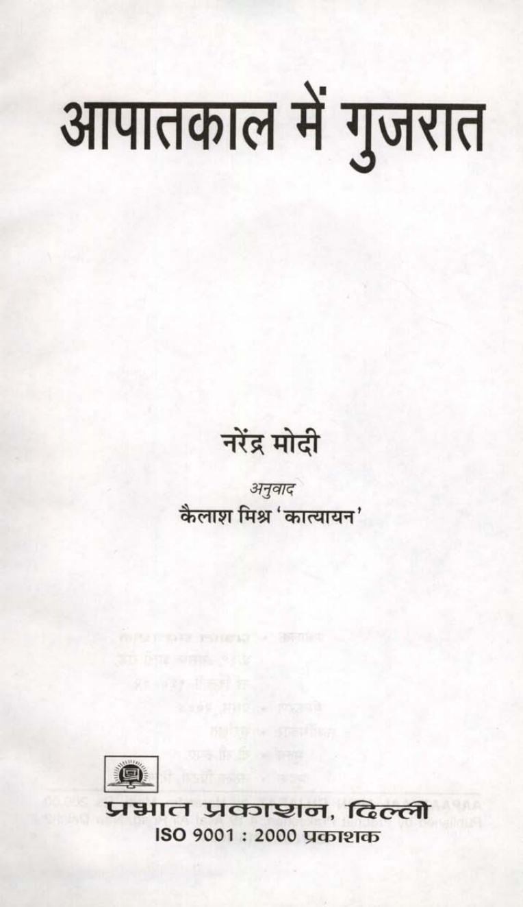

Original Hindi OCR
आपातकाल में गुजरात
नरेंद्र मोदी
कैलाश fae aterm ८
Wala प्रतक्ञच्णन, fecct
ISO 9007 : 2000 प्रकाशक
आपातकाल में गुजरात
नरेंद्र मोदी
कैलाश fae aterm ८
Wala प्रतक्ञच्णन, fecct
ISO 9007 : 2000 प्रकाशक
Gujarat in emergency
Narendra Modi
kailash fae aterm 8
Wala pratyaknachna, fecct
ISO 9007:2000 Publisher
Click the scan to open the full-size page image.
